Explore the features
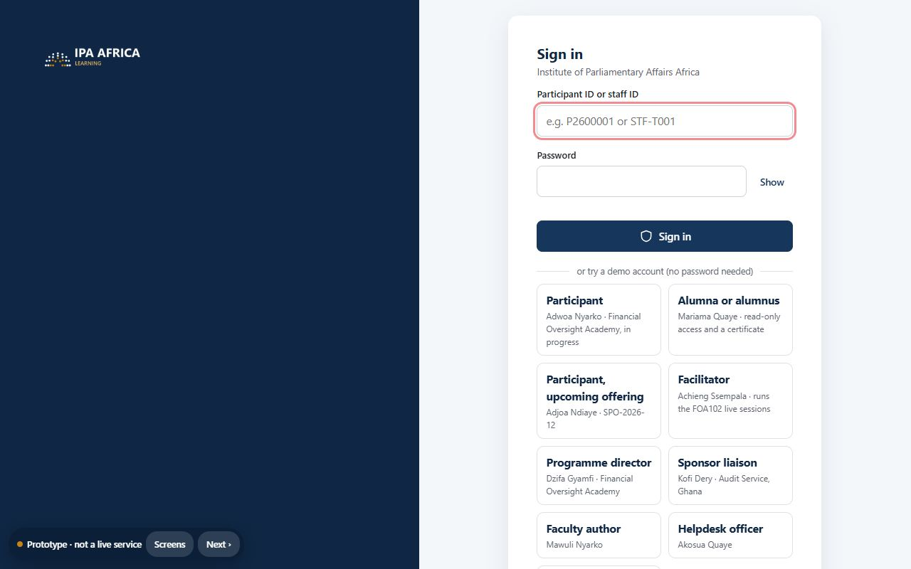
Sign in
208 demo participants from 14 countries and 67 staff accounts, each with a participant or staff ID and password.
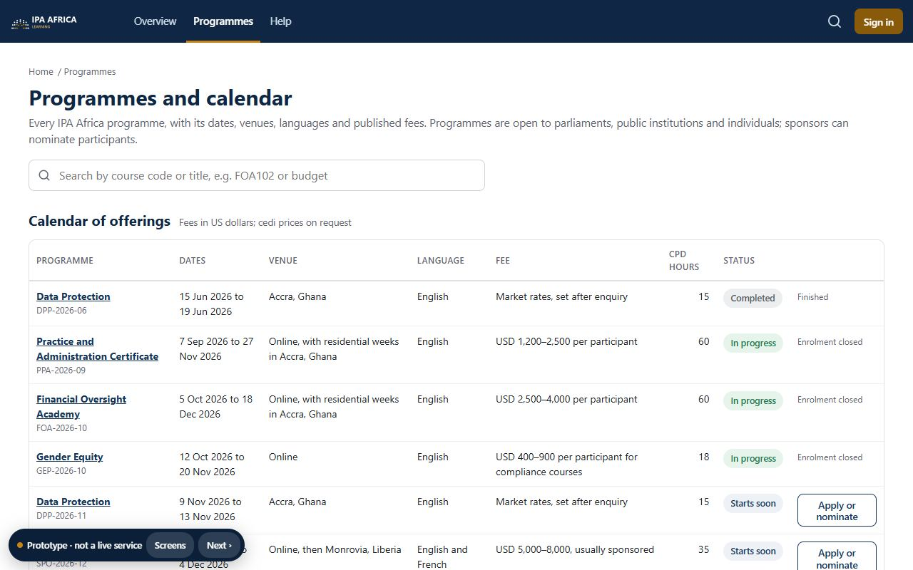
Programmes and calendar
Fifteen programmes in three tiers, with dated offerings, venues, languages, fees and CPD hours.
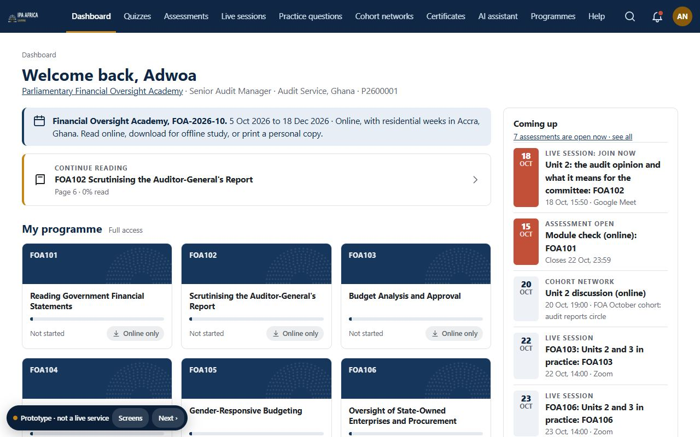
Participant dashboard
Current programme and cohort, reading progress, assessments, cohort meetings, alumni courses and certificates.
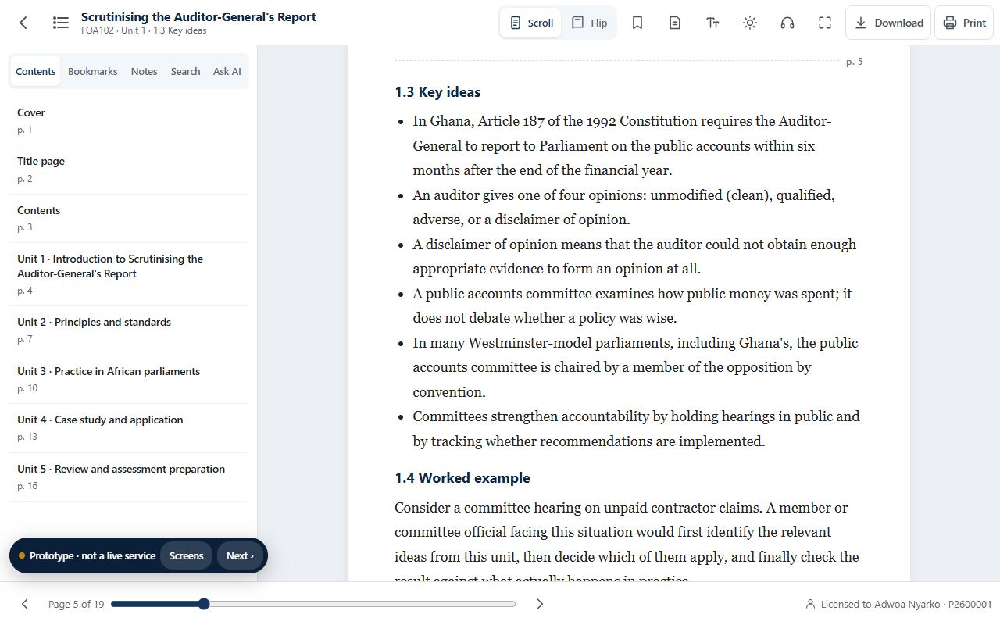
Reader: scroll view
Bookmarks, highlights, notes, search, read-aloud, text size and night mode.
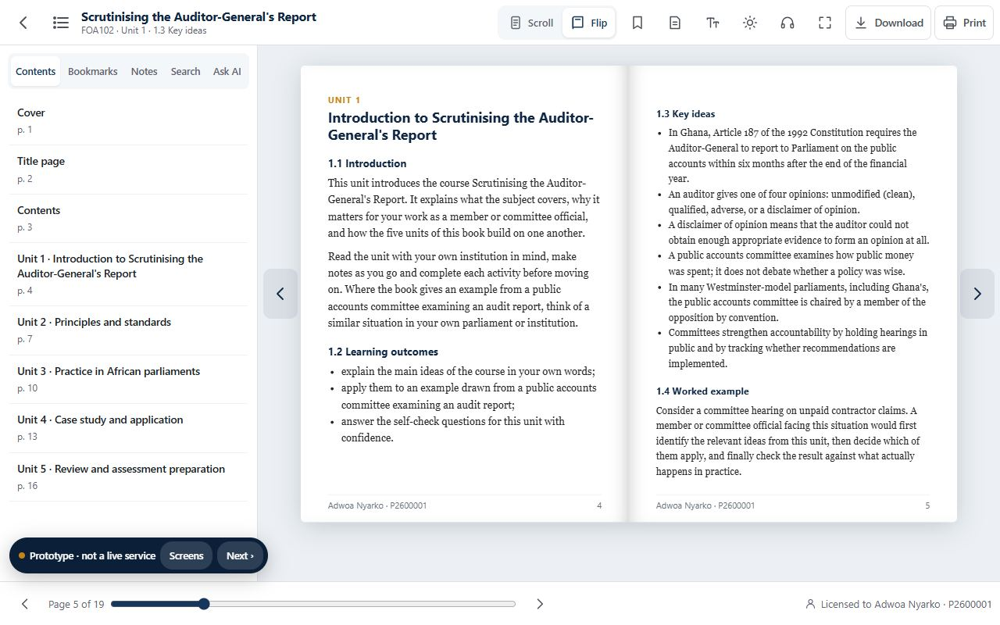
Reader: flip-book view
Pages turn like a printed book. Toggle between the two views; page numbers match.
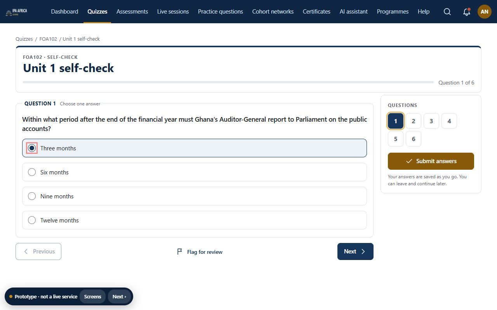
Quizzes
Self-checks for every course, with review, explanations and best scores. Facilitators build their own.
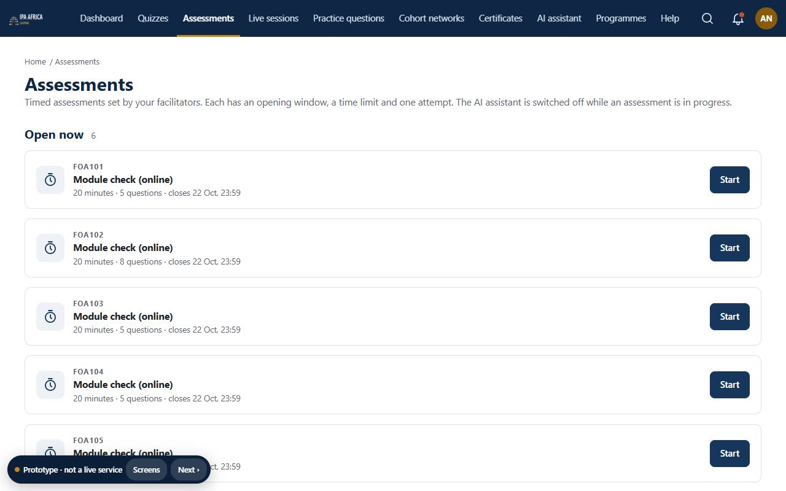
Assessments
Timed, one attempt, auto-submit, integrity log and results release.
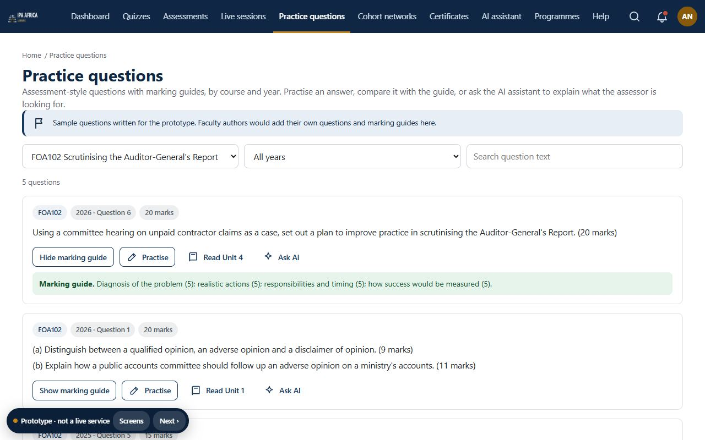
Practice questions
Questions with marking guides and practice answers.
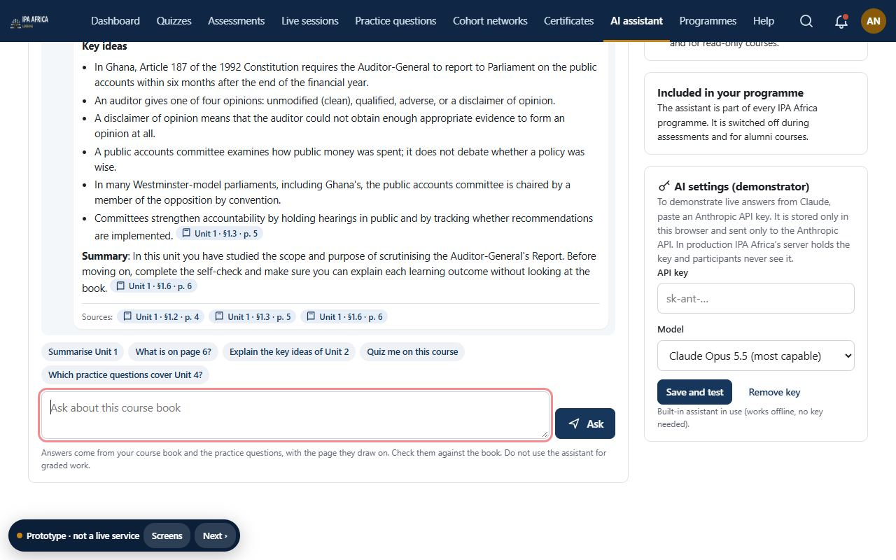
AI study assistant
Reads the whole course book and practice questions; cites unit, section and page.
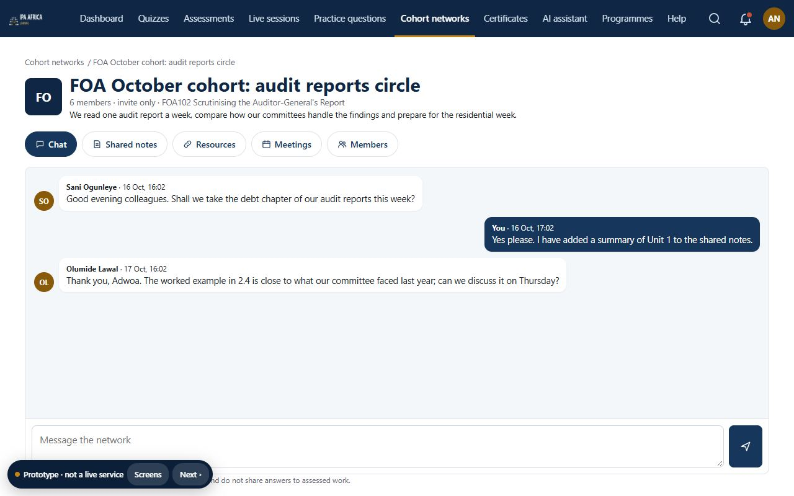
Cohort networks
Participant-built workspaces: invitations, chat, shared notes, resources and meetings.
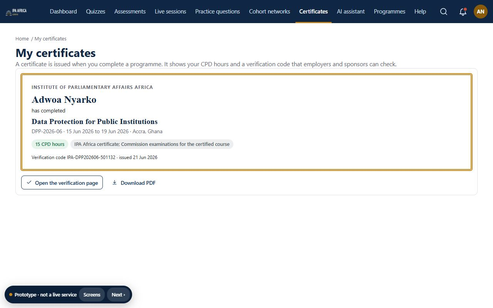
Certificates
CPD hours and a verification code that anyone can check.
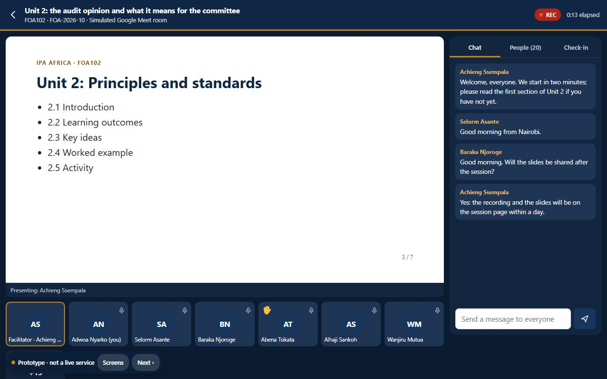
Live sessions
Online classes on Google Meet, Teams, Zoom or BigBlueButton: join, check in, attendance register and recordings.
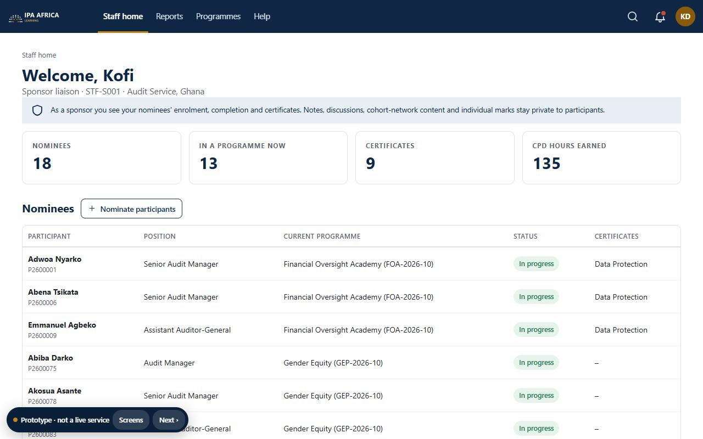
Staff and sponsors
Facilitators, programme directors, sponsor liaisons, helpdesk and administrators.